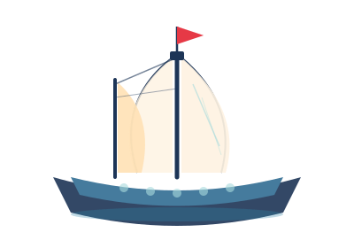
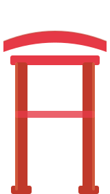
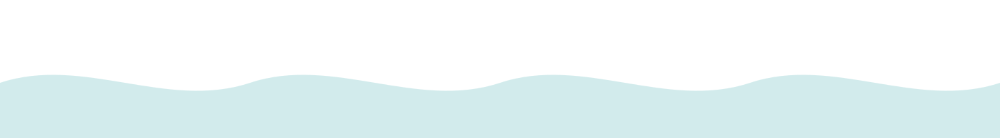
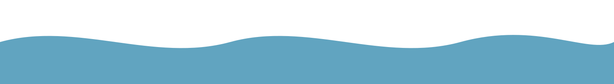
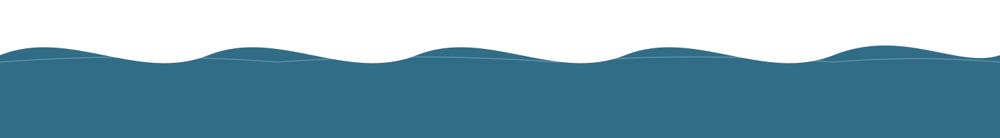
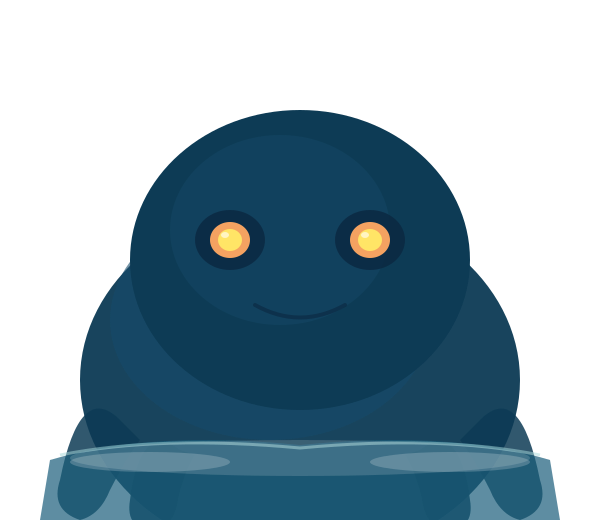
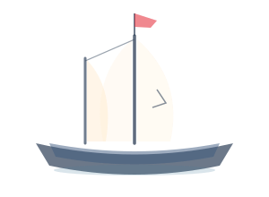

航海は終わらない

Sail through ancient waters where myth meets horizon



Beyond the harbour walls, the ancient sea stretches without mercy.
Each wave carries the breath of a thousand storms.

From the deepest trench it rose — a shadow beneath shadows,
older than any map, wider than any horizon.

A thousand ships that never reached port.
Their lanterns still burn — a warning, or a welcome?
Bearing the mark of deep waters and older gods,
the vessel found its harbour as the sun reborn its light.